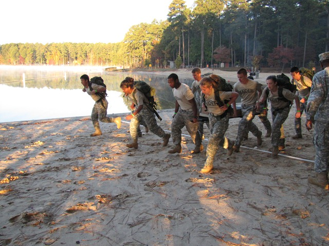
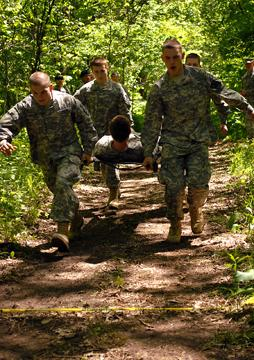
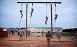
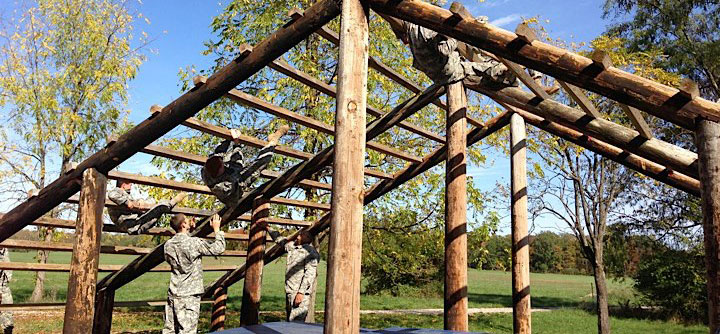

I have played multiple sports before like football,soccer,basketball,frisbee,baseball and my all time favorite is RAIDER which is a JROTC sport where you compete with other schools on obstacle cources, 1-3 mile runs with 45pound rug sacks on, sand bag carry (run a 40pound sand bag up and down a hill) , one rope bridge,tire flips, litter box carry, and other stuff.
| One Rope bridge | Rucksack carry | Sandbag carry |
|---|---|---|
| The One rope bridge allow a team to easily travel across dangerous landscape | The Rucksack carry is a bag about35-45 pounds and you have to run with it for a distance. | The Sand bag carry is brutal on the calves because it wieghs about 45 pounds and your running up a hill and around a cone and back down for 10 times. |
 |
 |  |
| Litter box carry | Ropeclimb | Weaver |
| The litter box carry is kinda like a streacher for wounded soldiers but is carried by men or women. | The rope climb is just a rope that your required to climb up and touch the wooden beam up top. | The weaver is a obsticle that you have to go over and uder the logs. |
|  |  |  |